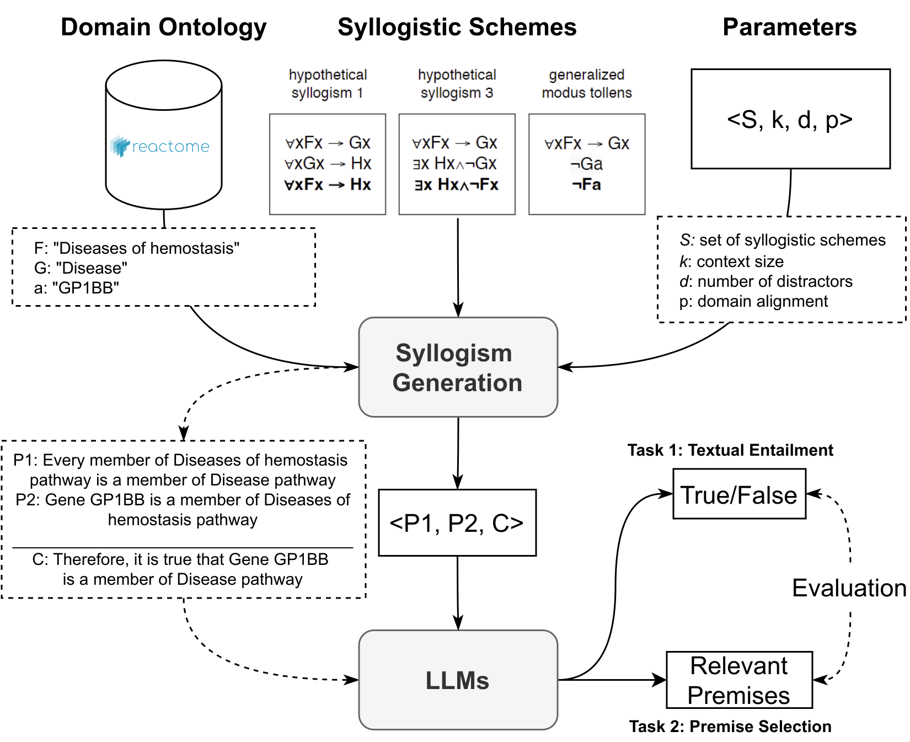

While there is a lot of potential for applications of AI assistant tools in biomedical research, the reliability of their underlying technology (large language models - LLMs) and their ability to logically compose their responses are crucial factors in adopting the technology into this field. This leads to a fundamental question: Can current AI models accurately and consistently draw logical conclusions from biomedical information?
In everyday life we often use simple logic: “If it rains, the ground gets wet.” That’s a basic syllogism: a rule that lets us draw a conclusion from two facts. In medicine, doctors, researchers and AI tools need to do the same thing, but with far more complex facts: gene‑pathway relationships, drug mechanisms, disease pathways, etc. If an AI cannot reliably follow these logical rules, it might give wrong answers or miss crucial connections, which could be dangerous in a clinical setting.
This is incredibly important for several reasons. Biomedicine is full of complex relationships: how genes interact, how drugs affect the body, how diseases progress. If we want AI to help with tasks like drug discovery, personalized medicine, or even just understanding scientific papers, it needs to be able to reason logically. A wrong conclusion could have serious consequences, leading to ineffective treatments, misdiagnosis, or wasted research efforts. We wanted to see if the AI we’re increasingly trusting for medical decisions is ready for these critical tasks, testing whether it is actually thinking the right way, not just guessing.
We created a large dataset called SylloBio-NLI. This dataset contains a series of logical puzzles based on real biomedical information. These puzzles are designed to test different types of reasoning, using 28 different logical structures (like "If A then B", or "Either A or B is true").
We then tested eight different AI models on this dataset, using two main approaches:
By analyzing how well the AI models performed on these puzzles, we could assess their reasoning capabilities:
The following diagram illustrates the complete research approach: generation of syllogistic arguments from domain-specific ontologies, parameterized input to LLMs, and evaluation tasks including textual inference and premise selection.
| What was tested | Result |
|---|---|
| Zero‑shot performance | Most models did not beat random guessing (50%) on the simple “if‑then” syllogisms. Only one model (Gemma‑7B‑it) reached about 64% accuracy. |
| Few‑shot help | Adding a few example syllogisms improved some models dramatically (e.g., Meta‑Llama‑3‑8B’s accuracy jumped 43%). But the boost was uneven, with some models performing worse with examples. |
| Scheme‑specific differences | Models were best on “generalised modus ponens” (the classic “if‑then” rule) and struggled most with “disjunctive syllogism” (the “either‑or” rule). |
| Sensitivity to wording | When the same logical structure was phrased differently (e.g., using negations or more complex verbs), model accuracy dropped sharply, especially in zero‑shot mode. Few‑shot examples helped but didn’t eliminate the problem. |
| Distractors & factuality | Adding irrelevant facts (distractors) hurt performance for some models, while changing real gene names to made‑up ones had little effect, suggesting the models rely more on structure than on biomedical knowledge. |
Bottom line:
Despite the progress in LLM capabilities, the SylloBio-NLI study underscores the challenges associated with applying these models to complex reasoning tasks in the biomedical domain. Further research is needed to develop more robust and reliable methods for leveraging LLMs in biomedical applications, focusing on improving logical comprehension and mitigating the reliance on superficial patterns.
Citation:
@inproceedings{wysocka-etal-2025-syllobio,
title = "{S}yllo{B}io-{NLI}: Evaluating Large Language Models on Biomedical Syllogistic Reasoning",
author = "Wysocka, Magdalena and
Carvalho, Danilo and
Wysocki, Oskar and
Valentino, Marco and
Freitas, Andre",
editor = "Chiruzzo, Luis and
Ritter, Alan and
Wang, Lu",
booktitle = "Proceedings of the 2025 Conference of the Nations of the Americas Chapter of the Association for Computational Linguistics:
Human Language Technologies (Volume 1: Long Papers)",
month = apr,
year = "2025",
address = "Albuquerque, New Mexico",
publisher = "Association for Computational Linguistics",
url = "https://aclanthology.org/2025.naacl-long.371/",
doi = "10.18653/v1/2025.naacl-long.371",
pages = "7235--7258",
ISBN = "979-8-89176-189-6"
}